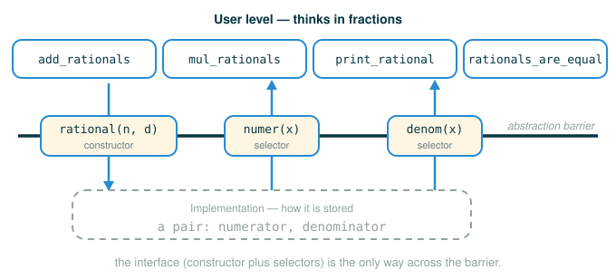

2.2 Data Abstraction and Rational Numbers
By the end of this lesson you will be able to do four things. You will be able to explain what data abstraction is and why it makes programs easier to write. You will be able to design a constructor and selectors for a new kind of value before deciding how that value is stored. You will be able to build real operations, such as adding and multiplying rational numbers, using only that interface. And you will be able to explain why decimal numbers are a poor way to store exact fractions.
The habit underneath all of this is one move repeated over and over: decide how a value will be used before you decide how it will be built. That order feels backwards the first time. By the end it will feel obvious.
Programs Are Easier When They Speak the Problem's Language
Programs become easier to understand when they let you think in the words of the problem instead of the words of the machine. If you are writing about fractions, you want to say "add these two rational numbers." You do not want to say "reach into this hidden container, pull out the first stored integer, multiply it by the second stored integer from the other container, then assemble a fresh two-part container from the results."
Both sentences describe the same computation. Only the first one is about fractions. The second is about storage. Keeping those two sentences separate is the entire idea of this lesson.
Data abstraction is the technique of separating what a value means from how that value is represented inside the computer.
An Analogy: Two Levels of a Car
Think about driving a car. The driver uses the steering wheel, the pedals, the dashboard, and the mirrors. The driver does not need to know the exact shape of every gear in the transmission to get to school.
There are two levels here, and they are deliberately kept apart.
- The user level: turn the wheel, press the brake, read the speed.
- The implementation level: axles, pistons, sensors, wires, and software.
A well-designed car protects the driver from the implementation level. You can learn to drive without learning to build an engine, and an engineer can redesign the engine without forcing every driver to relearn how to steer.
A well-designed program does the same thing. Data abstraction builds a boundary between how a value is used by the rest of the program and how that value is built and stored behind the boundary. Code on the user side of the boundary stays simple, and code on either side can change without breaking the other.
A Compound Piece of Information
A compound value is a single value built out of smaller values. Some information is naturally made of more than one part, and no single part is the whole thing.
A geographic position is a clean example. To pin down a location on Earth you need two numbers, a latitude and a longitude:
latitude: 37.8715
longitude: -122.2730Neither number alone is the position. The latitude 37.8715 by itself could describe a line stretching all the way around the planet. The meaningful value is the two numbers bound together into one thing. Much of this chapter is about how to glue smaller values into a single compound value and then take it apart again. We start with a clean mathematical case: rational numbers.
Rational Numbers
A rational number is any number that can be written as a ratio of two integers:
Here is the numerator and is the denominator, and cannot be , because division by zero has no defined value. These are all rational numbers:
The number is rational because it is the ratio of the integers and . The whole number is rational too, because it is .
When a textbook writes a rational number as a shape to fill in, it uses angle brackets as placeholders:
<numerator>/<denominator>That line is not Python. The angle brackets mean "put an integer here." So <numerator>/<denominator> with 1 and 2 filled in is the fraction one over two. We are about to build a real Python value that captures exactly this idea of a top integer paired with a bottom integer.
Why Not Just Use Decimals?
Before building anything, it is worth ruling out the lazy option. Why not store as the decimal number Python gives you when you divide?
Try the division in an interactive session:
>>> 1/3
0.3333333333333333That is not exactly one third. It is the closest value Python can store, and the digits stop. The true decimal for one third runs 0.333... forever, but the computer keeps only a fixed number of digits. So what you get back is an approximation that happens to look close.
The approximation is real enough that even an "obviously too short" decimal compares as equal:
>>> 1/3 == 0.333333333333333300000
TrueYou might expect False, because the number on the right clearly has fewer threes. But Python rounds both sides to the same stored floating-point value, so the comparison reports True. The lesson is not the specific digits. The lesson is that once you store a fraction as a decimal, you have already thrown away exactness, and equality tests can no longer be trusted to mean "the same number."
So we will not store rational numbers as decimals. We will keep the numerator and denominator as separate integers and never divide them. Integer arithmetic stays exact.
The Interface We Want
Before deciding how a rational number is stored, we decide how the rest of the program will talk about one. This is the central habit of data abstraction, and we commit to it now.
The figure below shows the abstraction barrier the constructor and selectors create between the user-level operations and the hidden representation.

We want a constructor, a function that builds a rational number from a numerator and a denominator:
# (1)
rational(n, d)
The call rational(n, d) should build a rational number with numerator n and denominator d.
We also want two selectors, functions that pull one meaningful part back out of a rational number:
# (2)
numer(x)
denom(x)
The selector numer(x) should return the numerator of the rational number x, and denom(x) should return its denominator.
The words constructor and selector name roles, not specific code. Every data abstraction you ever build will have these two kinds of function.
| Role | Question it answers | Example |
|---|---|---|
| Constructor | How do we make this kind of value? | rational(1, 2) |
| Selector | How do we get one meaningful part back? | numer(half) |
Notice what we have not said. We have not said whether a rational number is stored as a list, a function, a tuple, an object, or a string. That silence is on purpose. As long as the constructor and selectors agree with each other, the rest of the program does not care.
Reading a Constructor Call
The constructor call has the same shape as any call expression (a function call): a name, then parentheses, then arguments separated by a comma. Read rational(1, 2) one part at a time.
rational(1, 2)
├─ rational ...... the constructor: builds one rational number
├─ ( ............. begins the inputs
├─ 1 ............. the numerator to store
├─ , ............. separates the two inputs
├─ 2 ............. the denominator to store
├─ ) ............. ends the inputs
└─ evaluates to .. a rational number meaning 1/2The value of the whole call is one rational number. We do not yet know what that value looks like inside, and from the user side we do not need to.
Reading a Selector Call
A selector call has the same shape, but it takes a rational number and hands back one integer. Read numer(half), assuming half is the rational number rational(1, 2).
numer(half)
├─ numer ......... the selector: returns the numerator part
├─ ( ............. begins the input
├─ half .......... the rational number to inspect
├─ ) ............. ends the input
└─ evaluates to .. 1The selector reaches into a rational number and returns its numerator. The matching call denom(half) would return 2. Together, the constructor and the two selectors are the complete interface. Everything else we build sits on top of them.
Building Operations from the Interface
Once we have a constructor and selectors, we can write rational-number operations without knowing the internal representation at all. We will build addition first.
The rule for adding fractions is the common-denominator rule:
It is worth seeing why that formula is true rather than just trusting it. You cannot add two fractions until their denominators match, so rewrite each one over the shared denominator :
and
Now both fractions sit over , so the numerators can simply be added:
Slow that formula down into a recipe the machine can follow. The computer is not "understanding fractions." It is carrying out a short list of smaller arithmetic requests.
1. Ask x for its numerator and its denominator.
2. Ask y for its numerator and its denominator.
3. Build the new numerator that puts both fractions over a shared denominator:
nx * dy + ny * dx
4. Build the shared denominator:
dx * dy
5. Hand those two integers to the constructor rational.Warm-Up: The Numbers Before the Code
Before writing the function, do one addition entirely by hand so you can check the machine later. Add and .
first numerator: 1
first denominator: 2
second numerator: 1
second denominator: 3
new numerator: 1 * 3 + 1 * 2 = 5
new denominator: 2 * 3 = 6
result: 5/6Every line of this hand-calculation is about to become a line of Python. The two selector calls become the four part-numbers at the top. The formula becomes the two arithmetic lines. The constructor call becomes the final result.
A Second Bridge You Can Check by Hand
Try one more so the pattern is not a fluke. Add and .
first numerator: 2
first denominator: 3
second numerator: 1
second denominator: 4
new numerator: 2 * 4 + 1 * 3 = 11
new denominator: 3 * 4 = 12
result: 11/12You can confirm is right: and , and . The formula and the recipe agree with ordinary arithmetic.
The Official Function
Here is the operation exactly as the source text defines it:
# (3)
def add_rationals(x, y):
nx, dx = numer(x), denom(x)
ny, dy = numer(y), denom(y)
return rational(nx * dy + ny * dx, dx * dy)
Read the return line against the recipe. The expression nx * dy + ny * dx is the new numerator from step 3, and dx * dy is the shared denominator from step 4.
return rational(nx * dy + ny * dx, dx * dy)
├─ nx * dy + ny * dx ...... the new numerator, both fractions over one denominator
├─ dx * dy ................ the shared denominator
├─ rational(..., ...) ..... build a rational from those two integers
└─ evaluates to ........... a rational number, the sum of x and yLook at what add_rationals touches and what it does not. It asks for parts using numer and denom. It builds the answer using rational. It never asks how a rational number is stored. That last sentence is the whole point of data abstraction: the operation works against the interface, not against the representation.
The Anatomy of Multiple Assignment
One line inside add_rationals does something new. Look at it on its own:
# (4)
nx, dx = numer(x), denom(x)
This is a multiple assignment statement. It binds two names at once. Read it part by part.
nx, dx = numer(x), denom(x)
├─ nx, dx ......... two target names on the left, separated by a comma
├─ = .............. the assignment operator
├─ numer(x) ....... first expression on the right, evaluated to a value
├─ , .............. separates the two right-side expressions
├─ denom(x) ....... second expression on the right, evaluated to a value
└─ performs ....... binds nx to the first value and dx to the secondThe machine carries this out in a definite order:
1. Evaluate numer(x).
2. Evaluate denom(x).
3. Bind nx to the first result.
4. Bind dx to the second result.Python evaluates the entire right side first, left to right, and only then binds the names on the left. So nx and dx are new local names that hold copies of the two computed values. They are not permanently wired to x; changing x later would not change them. They live only inside this call.
Multiplying Rational Numbers
Multiplication is simpler than addition, because the denominators do not need to match first. Multiply numerator by numerator and denominator by denominator:
As a quick hand-check, , since and . Here is the official function:
# (5)
def mul_rationals(x, y):
return rational(numer(x) * numer(y), denom(x) * denom(y))
This return line has nested calls: selector calls sit inside the constructor call. Python finishes the inner calls before it can run the outer one. Follow the order.
return rational(numer(x) * numer(y), denom(x) * denom(y))
├─ numer(x) ............... the numerator of x
├─ numer(y) ............... the numerator of y
├─ numer(x) * numer(y) .... multiply them: the new numerator
├─ denom(x) ............... the denominator of x
├─ denom(y) ............... the denominator of y
├─ denom(x) * denom(y) .... multiply them: the new denominator
├─ rational(..., ...) ..... build a rational from those two products
└─ evaluates to ........... a rational number, the product of x and yLike add_rationals, this function speaks only the interface. It never reaches behind the boundary.
Printing Rational Numbers
Students often blur two different actions: returning a value and showing a value. A function can do either, but they are not the same thing, and print_rational shows why the distinction matters.
# (6)
def print_rational(x):
print(numer(x), '/', denom(x))
This function displays a rational number as readable text, with a slash between the numerator and the denominator. Read the call inside it.
print(numer(x), '/', denom(x))
├─ numer(x) ...... the numerator, to be displayed
├─ '/' ........... a literal slash character between the parts
├─ denom(x) ...... the denominator, to be displayed
├─ print(...) .... write all three pieces to the screen, separated by spaces
└─ performs ...... displays a line like "1 / 2"; the call's value is NoneThis is the trap in advance: print_rational shows a rational number, but it does not return one. The value it hands back is None, exactly like the built-in print it relies on. If you store the result of a print_rational call in a name, that name holds None, not a fraction.
Equality of Rational Numbers
Two rational numbers can be written differently yet mean the same value:
We want a test for "same value" that does not divide, because dividing would drag us back into the decimal-approximation problem from earlier. The trick is to cross-multiply. Two fractions are equal,
exactly when
For and this checks out: and , so they are equal. Here is the function:
# (7)
def rationals_are_equal(x, y):
return numer(x) * denom(y) == numer(y) * denom(x)
return numer(x) * denom(y) == numer(y) * denom(x)
├─ numer(x) * denom(y) .... left side of the cross-multiplication
├─ numer(y) * denom(x) .... right side of the cross-multiplication
├─ == ..................... compares the two products for equality
└─ evaluates to ........... True if the fractions are equal, else FalseBecause every step stays in integer multiplication, the comparison is exact whenever the numerators and denominators are integers. No floats, no rounding, no doubt.
The Complete Interface, So Far
Put the four operations together. This is the user-level half of our rational-number program:
# (8)
def add_rationals(x, y):
nx, dx = numer(x), denom(x)
ny, dy = numer(y), denom(y)
return rational(nx * dy + ny * dx, dx * dy)
def mul_rationals(x, y):
return rational(numer(x) * numer(y), denom(x) * denom(y))
def print_rational(x):
print(numer(x), '/', denom(x))
def rationals_are_equal(x, y):
return numer(x) * denom(y) == numer(y) * denom(x)
These four functions are written and finished, yet the program does not run yet. We still have not said how rational, numer, and denom are implemented. That feels backwards, and it is supposed to. Do not worry: by the end of this document you will see a temporary representation that makes everything run, and the next lesson builds the real one. We deliberately wrote how the rest of the program uses rational numbers before choosing how a rational number is stored. Choosing a representation is the job of the next lesson, where a numerator and a denominator get glued into a single compound value.
Calling the Operations
Once the representation is in place, the operations behave exactly the way the interface promised. Suppose rational, numer, and denom have been implemented and we have the four functions above. The following interactive session is what the source text shows:
>>> half = rational(1, 2)
>>> print_rational(half)
1 / 2
>>> third = rational(1, 3)
>>> print_rational(mul_rationals(half, third))
1 / 6
>>> print_rational(add_rationals(third, third))
6 / 9Read each result against the math. The product of and is , and print_rational(mul_rationals(half, third)) shows 1 / 6. The sum of and is , and the program shows 6 / 9.
That last line is correct but unreduced: and are the same value. The program never reduced the fraction to lowest terms. Reducing fractions is a representation concern, handled when we implement the constructor in the next lesson. For now, notice the important thing: every operation produced the right value while speaking only the interface.
A Guided Trace Without Representation Details
You can predict the behavior of these operations even before the representation exists, because the operations only use the interface. Suppose these two names already hold rational numbers:
# (9)
half = rational(1, 2)
third = rational(1, 3)
Now trace this call:
# (10)
sum_value = add_rationals(half, third)
Step through the body of add_rationals using only what the selectors promise to return:
Call: add_rationals(half, third)
Inside the call:
numer(half) -> 1
denom(half) -> 2
numer(third) -> 1
denom(third) -> 3
New numerator:
1 * 3 + 1 * 2 = 5
New denominator:
2 * 3 = 6
Return:
rational(5, 6)The result represents:
This is exactly the kind of reasoning that data abstraction is meant to enable. We understood the whole operation without ever inspecting how a rational number is stored. The trace mentions numer, denom, and rational, and never anything underneath them.
What the Environment Diagram Will Show
Once rational, numer, and denom are implemented, you can step through this:
# (11)
half = rational(1, 2)
third = rational(1, 3)
answer = add_rationals(half, third)
print_rational(answer)
The environment diagram has a global frame that holds the function names rational, numer, denom, add_rationals, and print_rational, along with the global names half, third, and answer. When add_rationals runs, a separate call frame opens for it. That frame holds the local names x, y, nx, dx, ny, and dy.
The lesson to take from the diagram is about where names live. The names nx, dx, ny, and dy exist only inside the add_rationals call frame. They are not global. When the call returns, that frame and its local names go away, and only the returned rational number, bound to answer, survives.
⚠Common Beginner Traps
The first trap is reaching for representation details too early. If add_rationals were to dig directly into the storage of a rational number, then later changing the representation would silently break it. The operation must go through numer, denom, and rational and nothing else.
The second trap is forgetting that print_rational shows a value but does not return one:
# (12)
value = print_rational(half)
After line (12) runs, value is None. The screen shows the fraction, but nothing useful was handed back to store.
The third trap is comparing rational numbers with decimal division:
# (13)
numer(x) / denom(x) == numer(y) / denom(y)
This looks natural, but it converts both fractions to floats first, and floats are approximations, so the == can report the wrong answer: it may call two unequal fractions equal, or two equal fractions unequal, the same way 1/3 == 0.333... returned a misleading True earlier. The cross-multiplication in rationals_are_equal stays in exact integer arithmetic, which is why it is the safe way to test equality.
The fourth trap is expecting results to come back reduced. As the 6 / 9 output showed, the operations return correct but possibly unreduced fractions. Reducing to lowest terms is a representation decision, not something the user-level operations promise.
✓Check Your Understanding
- What is the difference between a constructor and a selector?
- Why does
add_rationalscallrationalinstead of building storage by hand? - Why is even though the numerators and denominators are different?
- In
nx, dx = numer(x), denom(x), when are the right-side expressions evaluated, and where donxanddxlive? - Using only the interface, what does
print_rational(mul_rationals(rational(2, 5), rational(3, 7)))display on the screen? - We wrote
add_rationals,mul_rationals,print_rational, andrationals_are_equalbefore implementingrational,numer, anddenom. Why is writing the operations first a reasonable thing to do?
Show the answers
- A constructor builds an abstract value from its parts; a selector takes that value and returns one part. For rationals,
rational(n, d)constructs, andnumer(x)anddenom(x)select. - It calls
rationalso it stays on the user side of the boundary. If the representation changes later,add_rationalskeeps working, because it used the official constructor instead of assembling storage directly. - They are the same value because cross-multiplication matches: . The parts are named differently, but the ratio is identical.
- Python evaluates the entire right side first, left to right, so both
numer(x)anddenom(x)finish before any binding happens. The namesnxanddxare local to the current call frame and disappear when the call returns. - It displays
6 / 35. The product multiplies numerators () and denominators (), andprint_rationalshows those two integers with a slash between them. - Because deciding how a value is used and deciding how it is stored are independent. Writing the operations against a fixed interface lets us reason about and even test the user-level logic first, and then choose any representation that satisfies the interface without rewriting the operations.
§Summary
Data abstraction lets you write programs that use compound values without depending on how those values are stored. The method has two halves. First, design the interface: a constructor that builds the value and selectors that take it apart. For rational numbers that interface is rational, numer, and denom. Second, build operations such as addition, multiplication, display, and equality using only that interface. The boundary between the two halves is what keeps the user-level code clean: operations reason in the language of fractions while the representation stays hidden behind the constructor and selectors. Storing fractions as exact integer pairs, rather than as decimals, is what makes operations like equality reliable. The one thing still missing is the representation itself, gluing a numerator and a denominator into a single value, which is the subject of the next lesson.
▶Step-Through Checkpoint
This block is self-contained: it defines a temporary representation so the operations actually run. It borrows one piece of syntax from the next lesson: [n, d] bundles two values into a single list, and x[0] and x[1] pull the first and second item back out. You will study lists properly soon, so for now just read [1, 2] as the pair one and two, and x[0] as its first part. Before you step through the block below, write down two predictions: what half holds in the global frame, and what answer holds at the end.
# (14)
def rational(n, d):
return [n, d]
def numer(x):
return x[0]
def denom(x):
return x[1]
def add_rationals(x, y):
nx, dx = numer(x), denom(x)
ny, dy = numer(y), denom(y)
return rational(nx * dy + ny * dx, dx * dy)
def print_rational(x):
print(numer(x), '/', denom(x))
half = rational(1, 2)
third = rational(1, 3)
answer = add_rationals(half, third)
print_rational(answer)
Step through and check. The add_rationals frame opens with locals nx, dx, ny, and dy, then closes when the call returns; half is [1, 2] and answer is [5, 6].